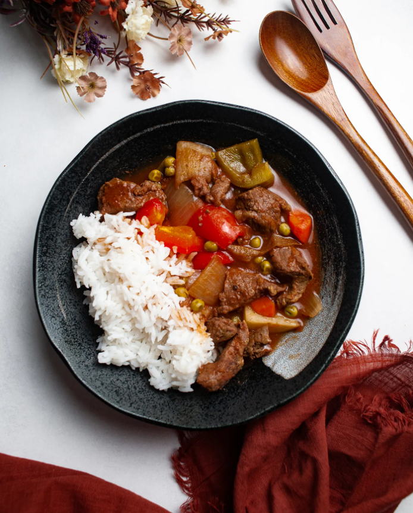

---- KALDERETA TIMEE ----

- Description:
- Beef Kaldereta is a main stay in any Filipino Kitchen.
- It is a type of beef stew cooked with tomato sauce and-
- liver spread. Ingredients such as potato, carrots, bell
- peppers, and olives are also utilized when cooking this dish.
- Ingredients:
-
- 2 lbs beef cubed
- 3 pieces garlic cloves crushed and chopped
- 1 piece onion finely chopped
- 2 cups beef broth
- 1 piece red bell pepper sliced
- 1 piece green bell pepper sliced
- 1 cup tomato sauce
- ½ cup liver spread processed using blender
- 1 teaspoon chili flakes
- 3 pieces dried bay leaves
- 2 cups potatoes sliced
- 2 cups carrots sliced
- 1/4 cup cooking oil
- ⅔ cup green olives
- salt and pepper to taste
- Instructions:
- Heat the cooking oil in the cooking pot or pressure cooker.
- Sauté the onion and garlic
- Add the beef. Cook for 5 minutes or until the color turns light brown.
- Add the dried bay leaves and chili flakes or crushed pepper. Stir.
- Add the liver spread. Stir.
- Pour-in the tomato sauce and beef broth.
- Cook the beef until it becomes tender (about 30 mins if using a pressure cooker, or 1 to 2 hours if using an ordinary pot).
- Add potato and carrots. Cook for 8 to 10 minutes.
- Put the green olives and bell peppers in the cooking pot. Stir and continue to cook for 5 minutes more.
- Add salt and pepper to taste
- Serve Hot. Enjoy!